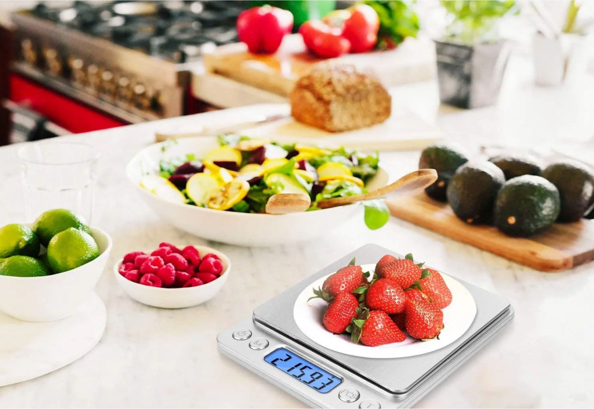
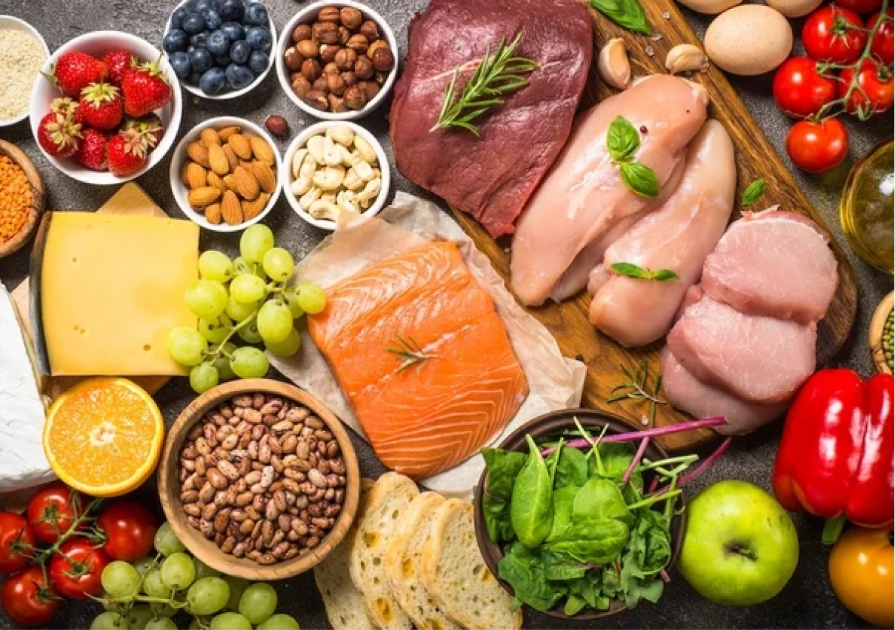

INTRODUÇÃO DO APLICATIVO
Ola,seja muito bem vindo(a) ao aplicativo oficial da Sculpt.corp.É um imenso prazer ter você aqui conosco,conte com a nossa empresa para atingir os seus objetivos durante o programa.
Esse aplicativo foi planejado para você que quer emagrecer mais não tem dinheiro para pagar nutricionista ou personal treiner
O aplicativo é composto pela dieta déficit calórico e a dieta jejum intermitente,e elas são aliadas a alimentos saciantes com auxilio de um chá especial que seca barriga,cardápios e exercícios funcionais.Além de tudo isso dentro do aplicaticavo temos dicas expeciais de como não fugir da dieta para você se manter firme e forte.
E é muito importante que você apenas inicie qualquer pratica ou mudanças alimentares deste aplicativo se você não tiver nem um problema de saúde,pressão alta,diabete e etc.Para que essas mudança alimentares não lhe cause nem um desconforto ou agravamentos de problemas de saude pré-existentes
OBSERVAÇÃO
E se por a caso o seu corpo não for de acordo com a dieta aqui dentro do aplicativo temos receitas Low Carbs que você pode ir substituindo pelos alimentos que o seu corpo não aceita e assim você pode modificando-las do jeito que você achar melhor,mais claro seguindo a dieta deficit calorico.
DÉFICIT CALÓRICO
Um déficit calórico para emagrecer significa que você está consumindo menos calorias do que seu corpo queima ao longo do dia. Esse desequilíbrio leva o corpo a usar suas reservas de gordura como fonte de energia, resultando na perda de peso.
Para criar esse déficit, você pode fazer duas coisas:
Reduzir a Ingestão de Calorias: Isso envolve escolher alimentos mais saudáveis, controlar as porções e evitar alimentos ricos em calorias vazias. O objetivo é garantir que você esteja consumindo menos calorias do que seu corpo precisa para manter o peso atual.
Aumentar a Atividade Física: Praticar exercícios, como aeróbicos e treinamento de resistência, aumenta o gasto calórico do seu corpo. Quanto mais você se exercita, mais calorias você queima, contribuindo para o déficit calórico.
O QUE PODE SER INGERIDO
Alimentos Ricos em Proteínas:
- Peito de frango, peito de peru, ovos, peixe, iogurte grego, leguminosas (feijão, lentilhas, grão-de-bico), carne magra e etc.
Vegetais e Frutas:
- Vegetais de folhas verdes, brócolis, cenouras, couve-flor, morangos, maçãs, peras e etc. São ricos em fibras e nutrientes essenciais.
Grãos Integrais:
- Aveia, quinoa, arroz integral, massa integral, pão integral. Fornecem carboidratos complexos, fibras e etc.
Produtos Lácteos com Baixo Teor de Gordura:
- Leite desnatado, queijo com baixo teor de gordura, iogurte com baixo teor de gordura. Fornecem cálcio, proteína e tc.
Hidratação:
- Água é essencial. Beba bastante água ao longo do dia e principalmente se estiver fazendo o use do super chá que esta nos capitolos a baixo.E tome cuidado porque as vezes,a sede é confundida com fome.
TUDO ISSO SERÁ EXPLICADO EM UM CAPITOLO EXPECIFICO
FALANDO TUDO CERTINHO SOBRE O ASSUNTO!
O que é Jejum intermitente
O jejum intermitente é uma prática alimentar que alterna períodos de jejum com períodos de alimentação. Não se trata de uma dieta específica, mas sim de um padrão alimentar que define quando você deve comer e quando deve jejuar. A ideia principal é restringir a ingestão de alimentos a determinadas janelas de tempo, permitindo que o corpo passe por períodos prolongados sem comida.
Existem diferentes métodos, como o 16/8, onde se jejua por 16 horas e se come em uma janela de 8 horas, e o 5:2, onde se come normalmente por cinco dias e reduz a ingestão calórica nos outros dois dias. Outros métodos incluem o Coma-Pare-Coma, o jejum em dias alternados e a dieta do guerreiro, cada um com suas próprias variações de tempo e restrições alimentares.
Os benefícios do jejum intermitente são variados. Um dos principais é a perda de peso e gordura corporal, pois reduz a ingestão calórica e melhora a função metabólica. Além disso, pode melhorar a sensibilidade à insulina, diminuir os níveis de açúcar no sangue e prevenir o diabetes tipo 2. Outros benefícios incluem a promoção da saúde do coração, melhora na função cerebral e, potencialmente, um aumento na longevidade com a redução de doenças relacionadas à idade.
Apesar dos benefícios, o jejum intermitente não é adequado para todos. Mulheres grávidas ou amamentando, pessoas com distúrbios alimentares, crianças e aqueles com condições médicas específicas devem evitar ou consultar um médico antes de iniciar essa prática. É essencial garantir que a alimentação durante os períodos de refeição seja equilibrada e nutritiva, suprindo todas as necessidades do corpo.
Manter-se hidratado é crucial, com água e bebidas sem calorias sendo recomendadas durante o jejum.
Prestar atenção aos sinais do corpo é fundamental. Se houver sintomas como fraqueza, tontura ou outros efeitos adversos, é importante interromper o jejum e buscar orientação médica. O jejum intermitente pode ser uma ferramenta eficaz para melhorar a saúde e a gestão do peso, desde que seja feito corretamente e adaptado às necessidades individuais.
COMO USAR A DIETA JEJUM INTERMITENTE
Dentro do bloco de jejum intermitente, você encontrará oito temas essenciais que irão guiá-lo passo a passo para iniciar e seguir corretamente a prática do jejum intermitente.
Primeiro, temos o tema "O que é jejum intermitente". Aqui, você aprenderá a definição e os princípios básicos do jejum intermitente, entendendo como ele funciona e quais são seus benefícios para a saúde.
O segundo tema é "Dias para jejuar". Nesse tópico, você descobrirá quais dias da semana são mais adequados para realizar o jejum, ajudando a planejar sua rotina de forma eficaz.
No terceiro tema, "Número de refeições diárias", você aprenderá quantas refeições deve fazer nos dias em que estiver jejuando, garantindo que suas necessidades nutricionais sejam atendidas de forma equilibrada.
O quarto tema, "Horários para jejuar", abordará as diferentes divisões de jejum, como a de 12/12 horas ou 14/10 horas, permitindo que você escolha a que melhor se adapta ao seu estilo de vida e objetivos.
O quinto tema, "Jejum intermitente e exercícios", explicará quais exercícios são recomendados durante a prática do jejum intermitente. Você aprenderá se pode continuar com os exercícios do aplicativo e como ajustar a intensidade das atividades físicas.
No sexto tema, "Cardápio para Dias Sem Jejum Intermitente", você encontrará sugestões de receitas e o número de refeições adequadas para os dias em que não estiver jejuando, mantendo uma alimentação balanceada.
O sétimo tema, "Cardápio para Quando Você For Jejuar", ensinará como usar o cardápio do aplicativo em conjunto com o jejum intermitente. Você aprenderá a ajustar o número de refeições conforme a divisão escolhida, garantindo que sua alimentação seja adequada às suas necessidades.
Finalmente, o oitavo tema, "E se Eu Não Me Adaptar ao Jejum", abordará o que fazer caso você não se adapte ao jejum intermitente. Esse tópico explicará que não há problema em não seguir essa prática e que você pode continuar utilizando o aplicativo normalmente, sem o jejum.
Cada tema foi cuidadosamente desenvolvido para fornecer todas as informações necessárias, garantindo que você siga o jejum intermitente de forma segura e eficaz. É fundamental que você siga todas as orientações para evitar qualquer problema e maximizar os benefícios dessa prática.
COMO FUNCIONA OS ALIMENTOS SACIANTES
"O cardápio de alimentos saciantes, aliado ao déficit calórico, será seu aliado fundamental no processo de emagrecimento rápido e saudável. Ao incorporar essas deliciosas e nutritivas opções ao seu dia a dia, você estará proporcionando ao seu corpo os nutrientes essenciais, enquanto mantém um balanço calórico negativo. Essa combinação estratégica não apenas satisfará seu paladar, mas também ajudará a controlar o apetite, promovendo uma sensação duradoura de saciedade.
Além disso, os alimentos saciantes presentes em nosso cardápio são cuidadosamente elaboradas para garantir não apenas a redução de calorias, mas também a manutenção de uma dieta equilibrada. Incluímos ingredientes ricos em fibras, proteínas magras e nutrientes essenciais que não apenas contribuem para a perda de peso, mas também suportam a saúde geral do organismo.
A variedade de opções disponíveis oferece a flexibilidade necessária para atender às preferências individuais, tornando o processo de emagrecimento mais acessível e prazeroso. Desde pratos principais até lanches saudáveis, cada receita é uma oportunidade de explorar novos sabores enquanto trabalha em direção aos seus objetivos de perda de peso.
COMO USAR O CARDÁPIO CORRETAMENTE?
"Em última análise, nosso cardápio não é apenas um guia culinário, mas uma ferramenta estratégica que o convida a explorar a diversidade de sabores e nutrientes, proporcionando uma abordagem equilibrada para o emagrecimento.
E para tornar esta jornada ainda mais pessoal e adaptada às suas necessidades, encorajamos você a mergulhar mais a fundo na modificação das receitas Low Carb disponíveis no nosso site. Se você tiver preferências específicas, restrições alimentares ou simplesmente quiser experimentar algo novo, use a base sólida do déficit calórico que é você comer menos do que você gasta,bom tem um bloco explicando tudo certinho,mais enfim use a dieta deficit como sua fundação e comece a criar versões personalizadas das receitas.
Mude as proporções, substitua ingredientes que te fazem mal pelas receitas Low Carb e ajuste os métodos de preparo de acordo com o que melhor se alinha com seus gostos e metas. Ao fazer isso, não apenas você adiciona um toque único a cada prato, mas também se torna o arquiteto da sua própria jornada de emagrecimento. Essa abordagem personalizada não só torna o processo mais flexível e adaptável, mas também fortalece sua conexão com a comida, tornando cada refeição uma expressão autêntica do seu compromisso com um estilo de vida saudável.
Ao modificar as receitas de forma consciente e criativa, você está não apenas otimizando o cardápio para atender às suas preferências individuais, mas também transformando sua relação com a comida em uma experiência empoderadora. Sinta-se à vontade para explorar, experimentar e descobrir a magia de adaptar as receitas Low Carb à sua medida, transformando cada prato em um passo significativo em direção a uma vida mais saudável e plena."
mais para você entender melhor nos temos um bloco que vamos ensinar você saber quanto você gasta e quanto deve consumir para entrar no seu deficit,e usar as receitas Low Carb para se você não achar legal o cardapio você ir modicando para o jeito que você achar melhor,mais lembre-se só modifique se você não come isso ou se os ingredientes das refeiçoes propostas acabar.
O QUE É DIETA LOW CARB?
A dieta low carb é um regime alimentar que se baseia na redução significativa do consumo de carboidratos, aumentando a ingestão de proteínas e gorduras saudáveis. O objetivo principal dessa dieta é incentivar o corpo a usar a gordura como principal fonte de energia, ao invés dos carboidratos.
Carboidratos são encontrados em alimentos como pães, massas, arroz, cereais, frutas, legumes ricos em amido e açúcares. Na dieta low carb, esses alimentos são limitados ou evitados, sendo substituídos por fontes de proteína (como carnes, peixes, ovos e laticínios) e gorduras saudáveis (como abacate, nozes, sementes, azeite de oliva e óleo de coco).
Ao reduzir a ingestão de carboidratos, o corpo entra em um estado chamado cetose, onde começa a queimar gordura armazenada para obter energia. Isso pode levar à perda de peso, redução do apetite e melhora nos níveis de açúcar no sangue e insulina.
COMO USAR AS RECEITAS LOW CARB JUNTO COM O CARDÁPIO?
Você que acabou de pegar o aplicativo e está explorando suas funcionalidades, pode ter notado um bloco chamado "Receitas Low Carb". Ao entrar nesse bloco, você encontrará uma variedade de receitas saborosas para café da manhã, almoço, café da tarde, jantar, sobremesas e bebidas. Pode surgir a pergunta: como incorporar essas receitas na sua rotina alimentar? A resposta é simples: essas receitas podem ser utilizadas caso você queira substituir alguma porção do cardápio.
Vou explicar melhor. Suponha que você entrou no bloco de cardápios e encontrou várias refeições planejadas. Quando você começar a seguir as dietas do aplicativo, pode acontecer de encontrar uma receita para o café da tarde que não lhe agrada. Nesse caso, você pode ir até as receitas low carb para café da tarde e escolher uma opção que lhe pareça mais apetitosa, fazendo uma substituição.
Essa troca também pode ser útil se você quiser variar sua dieta durante a semana ou no fim de semana, para evitar que a alimentação fique monótona. Pode ser um doce ou um jantar diferente, por exemplo. Mas lembre-se, todas as receitas disponíveis no bloco são aprovadas, então você pode fazer essas substituições com segurança.
Entretanto, é importante fazer essas trocas com moderação. Não substitua refeições todos os dias. Use as receitas low carb para variar sua dieta de forma equilibrada. E sempre tenha em mente o déficit calórico que você precisa manter para alcançar seus objetivos de emagrecimento. Certifique-se de que as quantidades que você consome estejam alinhadas com os cálculos do seu plano alimentar.
DESAFIO DO APLICATIVO
Aproveita para tirar uma foto do seu corpo,você pode ou não mandar no nosso instragram,isso é totalmente opcional.Se quiser mandar,ótimo,vai motivar muitas pessoas
Se não quiser apenas guarde ela com você,pois essa foto vai servir de inspiração e comparação com o seu antes x depois.Quando você começar a ter os primeiros resultados na balança e tambem começar a perder medidas.
Com certeza vai ser incrivel olhar essa foto e pensar como você evoluiu e conseguiu alcançar um novo corpo e um novo peso,sendo assim mais feliz e com sua alto estima la em cima.
Se você quiser participar e realmente tirar a foto.Você pode tirar uma foto com o seu peso atual e após 30 dias, você pode tirar uma nova foto para comparar a mudança do seu corpo,a perda de medida e tambem de peso e nós mandar.Mais uma importante missão para você é não se esquecer de tirar a foto!Assim fica mais facil perceber na prática o quanto você emagreceu e isso motivara você mais ainda.
Antes de qualquer coisa procure no indice o capitolo lista de compras e a tabela de alimentos para ter uma sugestão de quais alimentos comprar na sua próximas ida ao super mercado e quais são as sugestões de alimentos permitidos e restrista durante sua jornada.É muito símples e prática!
ÁGUA COM LIMÃO SEMPRE
"Todos os dias de manhã, você pode tomar água com o suco de 1/2 limão. Essa prática simples oferece diversos benefícios para a sua saúde. O suco de limão é uma excelente fonte de vitamina C, que ajuda a fortalecer o sistema imunológico, combatendo resfriados e gripes. Além disso, a combinação de água e limão é um ótimo modo de iniciar o dia hidratado, promovendo a saúde da pele e auxiliando na digestão.
A acidez suave do limão pode também estimular a produção de enzimas digestivas, facilitando a absorção de nutrientes pelos intestinos. Esse hábito matinal pode contribuir para o equilíbrio do pH do corpo e proporcionar um impulso de energia, graças às propriedades revitalizantes do limão. Alguns estudos indicam que a ingestão regular de água com limão pode até mesmo apoiar a perda de peso, ajudando na eliminação de toxinas e promovendo a sensação de saciedade.
NO MÍNIMO 2 LITROS DE ÁGUA POR DIA
Outro ponto importante logo após tomar a sua água com limão,épreparar a sua garrafinha de água.
Eu gosto e tenho uma garrafinha especia de 500 ml que compriu apenas para carregar comigo e tomar água constantemente.Com a garrafinha fica super facíl ,afinal,eu sei que precisa tomar apenas 1 garrafa de manhã,2 a tarde e 1 no periodo da noite,assim no mínimo eu terei tomado durante o dia o nessesário que são 2 litros de água.Caso você bebe mais que isso,perfeito!Mas se você não tem o costume de tomar água, minimo recomendo todos dias é 2 litros.Durante o seu processo de emagrecimento é muito importante que tome essa quantidade.
EXERCÍCIOS FÍSICOS
Exercícios desempenham um papel fundamental na queima de gordura, sendo essenciais para alcançar uma composição corporal saudável. Ao considerar a praticidade e eficácia, a inclusão de um componente específico, como um bloco integrado, dentro de um sistema para treinos em casa pode potencializar os resultados.
Esse bloco, quando incorporado às suas sessões de exercícios, pode oferecer uma variedade de opções para treinos com pesos, treinamento de resistência e até alongamento antes da sessões. Além de proporcionar versatilidade, permite realizar exercícios focados na queima de calorias, no aumento do metabolismo e na oxidação de gordura, contribuindo para uma abordagem holística na busca por uma composição corporal saudável.
Com a conveniência de treinar em casa e a eficiência desse bloco específico, você tem a oportunidade de estabelecer e manter uma rotina consistente de exercícios, o que, aliado a uma dieta equilibrada, é fundamental para alcançar seus objetivos de saúde e bem-estar. Além disso, a praticidade desse bloco específico para treinos em casa pode ser um fator motivador adicional.
Ao eliminar barreiras de deslocamento para academias e oferecer a flexibilidade de integrar exercícios em sua rotina diária, esse componente torna mais fácil manter a consistência nos treinos. A consistência é chave quando se trata de alcançar objetivos de perda de gordura e melhoria da composição corporal. Ao aproveitar a versatilidade desse bloco e sua capacidade de proporcionar treinos desafiadores e eficazes, você está investindo não apenas em um equipamento, mas em um estilo de vida ativo e saudável.
Além de contribuir para a queima de gordura, os treinos regulares em casa com esse bloco específico oferecem benefícios adicionais. Aumentar a resistência, fortalecer o sistema cardiovascular e promover o bem-estar mental são aspectos essenciais que se somam aos objetivos de saúde global. Assim, ao integrar esse componente em sua jornada de condicionamento físico, você não só trabalha em direção aos seus objetivos estéticos, mas também promove uma saúde integral.
COMO NÃO FUIGIR DA DIETA
"Dentro desse bloco, queremos te dar as ferramentas certas para fortalecer a mentalidade e te ajudar a não desistir da dieta. Olha, a ideia aqui não é só impor restrições, mas te guiar para construir uma relação saudável com a comida.
Entendemos que a jornada pode ser desafiadora, e é por isso que estamos aqui para oferecer apoio. Vamos trabalhar juntos na construção de pensamentos positivos. Ao invés de focar no que está sendo deixado para trás, concentre-se no que está sendo construído. Cada escolha saudável é um passo para mais perto dos teus objetivos.
A resistência às tentações é como treino para a mente. Estamos aqui para te lembrar do propósito por trás dessa jornada. Vamos criar uma mentalidade de resiliência, onde os deslizes não se transformem em quedas, mas em oportunidades de aprendizado.
No meio de uma rotina agitada, entendemos que pode ser difícil manter o foco. Aqui, dentro desse bloco, queremos te oferecer dicas práticas para tornar as escolhas saudáveis mais acessíveis e menos complicadas. Vamos explorar receitas simples, opções de lanches nutritivos e estratégias para lidar com situações sociais que podem desafiar seus objetivos.
Estamos aqui para te lembrar do quão incrível é a jornada que você está construindo. Juntos, vamos superar os desafios e transformar esse bloco dietético em uma fundação sólida para uma vida mais saudável e equilibrada."
Estamos aqui para te lembrar do quão incrível é a jornada que você está construindo. Juntos, vamos superar os desafios e transformar esse bloco dietético em uma fundação sólida para uma vida mais saudável e equilibrada."